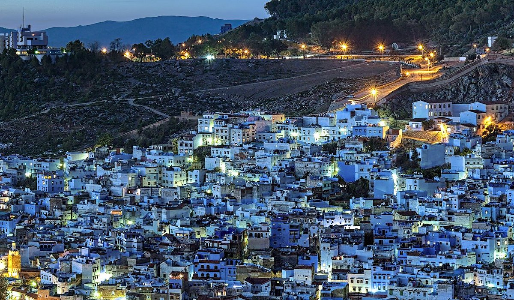
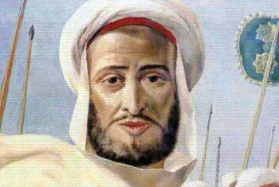
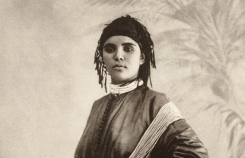
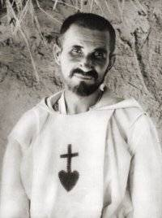
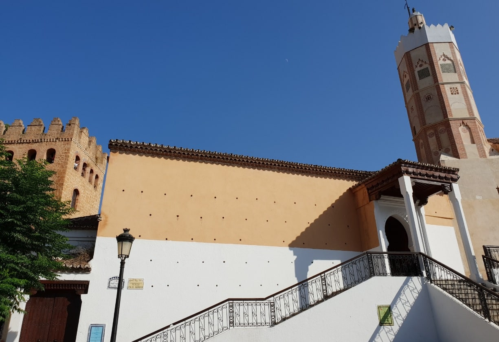

The History of Chefchaouen
Discover the fascinating past of Morocco's blue city and how it evolved through centuries of cultural exchange and transformation
A City of Rich Heritage
Nestled in the Rif Mountains of northern Morocco, Chefchaouen stands as a living testament to centuries of diverse cultural influences. Known worldwide for its striking blue-washed buildings, this enchanting city has a complex history that weaves together Moorish, Jewish, Spanish, and Berber traditions.
From its origins as a small fortress town to its emergence as one of Morocco's most beloved tourist destinations, Chefchaouen's story is one of resilience, cultural preservation, and adaptation. The city's unique character has been shaped by waves of migration, periods of isolation, foreign occupation, and the enduring spirit of its inhabitants.
Geographic Setting
Situated at an elevation of approximately 564 meters (1,850 feet) in the Rif Mountains, Chefchaouen's location has played a crucial role in its development and history. The city is nestled between two mountain peaks that resemble horns, giving the city its name - "Chefchaouen" derives from the Berber words "ichawen" (horns).
Cultural Significance
Throughout its history, Chefchaouen has served as a cultural crossroads where Andalusian, Moroccan, and Berber traditions have blended to create a unique cultural identity. The city's architecture, cuisine, handicrafts, and social customs reflect this rich multicultural heritage.
A Journey Through Time
Before the City
Before 1471Long before Chefchaouen existed, the region was home to Berber tribes, thriving on its fertile valleys and strategic trade routes.
Archaeological traces reveal settlements dating back to prehistoric times, rooted in the Rif mountains.
Birth of Chefchaouen
1471Founded by Moulay Ali Ben Rachid, Chefchaouen began as a fortress to resist Portuguese invasions. The town's name, from Berber "Ichawen" (goat horns), echoes the surrounding peaks.
A medina and kasbah formed the city’s core, enclosed by protective walls.
Waves of Refuge
1492-1496Muslim and Jewish refugees, fleeing the Spanish Reconquista, brought Andalusian art, culture, and architecture to Chefchaouen.
The city expanded with new neighborhoods and vibrant crafts rooted in their heritage.
Andalusian Rise
16th CenturyChefchaouen blossomed as a cultural hub. The Grand Mosque was erected, and Sufi brotherhoods shaped its spiritual life.
The town gained a reputation as a sacred, scholarly place.
Centuries of Solitude
16th–19th C.For over 300 years, the city closed itself to outsiders, especially Christians. This protected its culture and Andalusian identity.
It remained untouched while Morocco around it evolved rapidly.
First Foreign Glimpse
1860Spanish troops entered during the Spanish-Moroccan War, and a few Europeans, including explorer Charles de Foucauld, began documenting the mysterious town.
Colonial Era
1920–1956Under Spanish rule, Chefchaouen saw modern infrastructure and institutions emerge, while still preserving its soul.
Spanish remains widely spoken among older residents today.
A New Chapter
1956Morocco’s independence marked a new era. Chefchaouen integrated into the modern state while remaining rooted in tradition.
Economic Shift
1970sCannabis cultivation became a major livelihood in the Rif, providing income amid economic struggles despite its legal gray area.
Tourism Awakens
1980s–1990sTravelers discovered Chefchaouen's blue-painted charm. The medina adapted, offering riads and guesthouses for adventurers.
Global Spotlight
2000s–NowWith Instagram and global travel booming, Chefchaouen has become a global icon. Its dreamlike hues attract photographers, influencers, and tourists from around the world.
Despite its fame, the city continues to honor its traditions and peaceful rhythms.
Why Is Chefchaouen Blue?

The distinctive blue color of Chefchaouen's buildings is one of the city's most famous features, attracting photographers and travelers from around the world. But when did this tradition begin, and why?
Interestingly, the blue-washing of Chefchaouen is not an ancient tradition dating back to the city's founding. Historical records and photographs indicate that many buildings in Chefchaouen were white or natural earthen colors until the mid-20th century. The widespread blue-washing appears to have begun in earnest in the 1930s and became more prevalent after the 1970s.
Several theories exist about why the residents began painting their city blue, and the truth likely involves a combination of these factors:
Jewish Influence
One of the most widely accepted theories attributes the blue color to Jewish refugees who settled in Chefchaouen during the 1930s, fleeing Nazi persecution in Europe. In Jewish tradition, the color blue (tekhelet) holds special significance, symbolizing the sky, heaven, and divine presence.
The Jewish community in Chefchaouen began painting their homes blue as a reminder of God's power and the sky above. Although most of the Jewish population left for Israel after 1948, the tradition was continued by the remaining residents.
Mosquito Repellent
A practical explanation suggests that the blue color, particularly when created using a mixture containing copper sulfate, helps repel mosquitoes and other insects that thrive in the warm climate.
While modern science doesn't fully support this theory (mosquitoes are more deterred by certain scents than colors), the belief may have contributed to the spread of the practice throughout the city.
Cooling Effect
The blue color may have been chosen for its cooling psychological effect in the hot climate of Morocco. Light colors reflect sunlight rather than absorbing it, and blue in particular creates a sense of coolness and tranquility.
This practical consideration would have made the city more comfortable during the hot summer months, especially before the advent of modern cooling systems.
Water Symbol
In the arid landscape of Morocco, water is precious and highly valued. The blue color may symbolize the water resources that made settlement in this mountain region possible.
Chefchaouen is blessed with abundant water from mountain springs, and the blue color could be a celebration of this life-giving resource that has sustained the city throughout its history.
Tourism and Cultural Identity
Whatever the original reasons, the blue color has become an integral part of Chefchaouen's identity and a major draw for tourism. The tradition continues today with residents regularly repainting their homes in various shades of blue, from pale sky blue to deep indigo.
The blue-washing has evolved into a community activity, with neighbors often helping each other apply fresh coats of paint. The city government provides blue paint to residents to maintain this unique tradition that has become central to the city's cultural and economic life.
As tourism has grown, the blue has intensified and spread to more areas of the city, creating the magical blue wonderland that has made Chefchaouen famous worldwide as "The Blue Pearl of Morocco."
Key Historical Figures

Moulay Ali Ben Rachid
1471-1511
The founder of Chefchaouen, Moulay Ali Ben Rachid was a descendant of the Prophet Muhammad and a Sharif (noble) from Granada. After the fall of Islamic rule in Andalusia, he established Chefchaouen as a base to fight Portuguese expansion in northern Morocco.
His leadership laid the foundation for the city's development as a center of Andalusian culture in Morocco. His tomb is still venerated in the city today.

Lalla Zahra Sidi Hmad
Late 15th century
The wife of Moulay Ali Ben Rachid played a crucial role in the early development of Chefchaouen. After her husband's death, she continued his work, overseeing the construction of the city's water system and several important buildings.
She is credited with establishing the first mosque in the city and promoting education. Her leadership during a critical period helped ensure the survival and growth of the young settlement.

Charles de Foucauld
1858-1916
A French explorer and Catholic religious figure who visited Chefchaouen in 1883 disguised as a rabbi. At the time, Christians were forbidden to enter the city, making his visit a dangerous undertaking.
His detailed descriptions and sketches of Chefchaouen provided the Western world with some of the first documentation of this isolated city, contributing significantly to historical records of the period.
Historical Sites to Visit

Kasbah Museum
The 15th-century fortress and dungeon in the heart of the medina now houses a fascinating ethnographic museum showcasing local artifacts, ancient weapons, and traditional clothing.
Built by Moulay Ali Ben Rachid in 1471, the Kasbah features beautiful gardens, a small ethnographic museum, and impressive Andalusian-influenced architecture. The tower offers panoramic views of the city.

Plaza Uta el-Hammam
The main square of Chefchaouen has been the center of city life for centuries. Surrounded by cafes and restaurants, it's home to the Grand Mosque and the Kasbah.
Named after the Arabic word for "bath," as public baths were once located here, the plaza is lined with restaurants and cafes housed in traditional buildings. It's the perfect place to observe daily life and the meeting point for locals and visitors alike.

Grand Mosque
Built in the 15th century, the Grand Mosque is one of the oldest buildings in Chefchaouen. Its distinctive octagonal minaret reflects the Andalusian influence on the city's architecture.
While non-Muslims cannot enter the mosque itself, the exterior is worth admiring for its beautiful design. The call to prayer emanating from this historic mosque five times daily has been a constant in city life for centuries.

Spanish Mosque
Built in the 1920s during the Spanish occupation but never used, this mosque sits on a hill overlooking the city, offering spectacular panoramic views of Chefchaouen.
The 30-minute hike to reach the mosque is rewarded with the best views of the blue city, especially at sunset. The abandoned building stands as a reminder of the Spanish colonial period in northern Morocco.

Ras El Ma (Water Source)
This natural spring at the eastern edge of the medina has provided water to Chefchaouen since its founding. The name literally means "head of the water" in Arabic.
Local women still gather here to wash clothes in the traditional way. Following the stream leads to small waterfalls and a path to the Spanish Mosque. The site demonstrates the importance of water resources in the city's history.

Mellah (Jewish Quarter)
The historic Jewish quarter of Chefchaouen offers a glimpse into the multicultural past of the city. Though the Jewish community has largely departed, their influence remains visible in the architecture and blue colors.
The area features distinctive architectural elements like wrought-iron window grilles and interior courtyards. A small cemetery and the site of a former synagogue can still be visited, though little remains of the original structures.
Historical Artifacts
Andalusian Craftsmanship
The Kasbah Museum houses a collection of artifacts that showcase the Andalusian influence on Chefchaouen's material culture. These include intricately carved wooden furniture, ceramic tiles with geometric patterns, and metalwork featuring distinctive Moorish designs.
These artifacts demonstrate how refugees from Spain brought their artistic traditions to Chefchaouen, creating a unique fusion of Moroccan and Andalusian styles that continues to influence local craftsmanship today.
Traditional Textiles
Chefchaouen is renowned for its distinctive wool garments and textiles, particularly the handwoven blankets and clothing made from local sheep's wool. The city's textile tradition dates back centuries and reflects both Berber and Andalusian influences.
The traditional looms used by local artisans have changed little over the centuries. Historical examples of these textiles, featuring distinctive blue and white patterns, can be viewed in the Ethnographic Museum, providing insight into the daily life of past generations.
Oral History & Legends
The Legend of the Forbidden City
"For centuries, Chefchaouen was known as the forbidden city to Christians. It is said that a European who dared to enter would be killed or imprisoned immediately. The city's isolation became legendary, and tales spread of a mysterious blue city hidden in the mountains that no outsider had ever seen."
This legend has some basis in historical fact. Until the Spanish occupation in the 20th century, Chefchaouen was indeed closed to non-Muslims, with only a handful of disguised European explorers managing to enter and document the city. This isolation helped preserve the city's unique character and traditions.
The Blessing of the Blue
"The elders tell of a time when a great drought threatened the city. The people prayed for rain, and a wise rabbi suggested painting the buildings blue to resemble the sky and remind God of the need for water. Soon after the city turned blue, the rains came, saving the crops and the people. Since then, the blue has been maintained as a symbol of divine blessing."
While this story may be apocryphal, it reflects the spiritual significance often attributed to the blue color in local folklore. The connection between the blue buildings and water—a precious resource in this mountainous region—appears in many local stories.
The Guardian of the Mountains
"It is said that a powerful djinn (spirit) lives in the mountains surrounding Chefchaouen, protecting the city from invaders. The blue color of the buildings is meant to appease this spirit, who loves the color of the sky. Those who respect the traditions of the blue city will receive the djinn's blessing, while those who disrespect them may face misfortune."
This legend reflects the blend of Islamic, Jewish, and pre-Islamic Berber beliefs that have shaped the cultural landscape of Chefchaouen. Supernatural protectors and mountain spirits feature prominently in the folklore of the Rif region.
Experience the History of Chefchaouen
Book a guided historical tour and discover the fascinating stories behind the blue walls with our knowledgeable local guides.
3-Hour Historical Tour
Explore the key historical sites of Chefchaouen's medina with expert commentary on the city's fascinating past.
From $35 per person
Full-Day Historical Immersion
A comprehensive tour covering the complete history of Chefchaouen, including visits to all major historical sites and hidden gems.
From $65 per person
Historical Photography Tour
Combine history and photography with this specialized tour focusing on the most photogenic historical locations.
From $45 per person
Further Historical Resources
Recommended Reading
-
The Blue City: A History of Chefchaouen
by Mohammed El Moutawakil (2010)
-
Andalusian Exile: The Moorish Diaspora in Morocco
by Isabella García (2015)
-
The Jews of Northern Morocco
by David Cohen (2008)
-
Spanish Morocco: Colonial History and Legacy
by Antonio Fernández (2012)
Documentaries & Films
-
The Blue Pearl: Chefchaouen's Hidden History
National Geographic (2018)
-
Andalusian Echoes: The Legacy of Moorish Spain in Morocco
BBC Documentary (2016)
-
Colors of Morocco: The Story Behind Chefchaouen's Blue
Travel Channel (2019)
-
The Forbidden City: Chefchaouen Before Tourism
Independent Documentary (2014)
Museums & Archives
-
Kasbah Ethnographic Museum
Chefchaouen, Morocco - Houses the most comprehensive collection of artifacts related to the city's history.
-
National Library of Morocco
Rabat, Morocco - Contains historical documents and manuscripts related to Chefchaouen's founding and development.
-
Andalusian Archives
Granada, Spain - Holds records of the Moorish exodus from Spain, including documents related to the founding families of Chefchaouen.
-
Spanish Colonial Archives
Madrid, Spain - Contains extensive documentation from the Spanish Protectorate period, including maps, photographs, and administrative records of Chefchaouen.
Historical FAQs
Stay Updated
Subscribe to our newsletter for historical articles, event announcements, and updates about Chefchaouen.
We respect your privacy and will never share your information. Unsubscribe at any time.